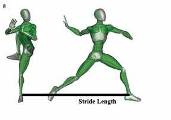

The Stride Fallacy probably get rid of this
“The LONGER you stride the HARDER you throw”
The Hypothesis
Conventional baseball wisdom suggests that: The farther you stride the harder you will throw. Is that true?
Parameters of Research
Stride length is calculated from the rubber to the back of the front foot. It is shown as a percent of the athletes height. (0.7 = 70% of height)
The Data
We analyzed stride length (normalized as a percentage of body height) versus fastball velocity for our pitcher cohort.
🔻 Click Here for the Legend
Axis's: Stride length is the linear distance from the pitching rubber to the center of the lead foot at foot contact.
Key Insight: Manzi et al. (2022) found that increased stride length is associated with higher ball velocity.
Citation: Manzi, J. E., et al. (2022). Journal of Sports Sciences.